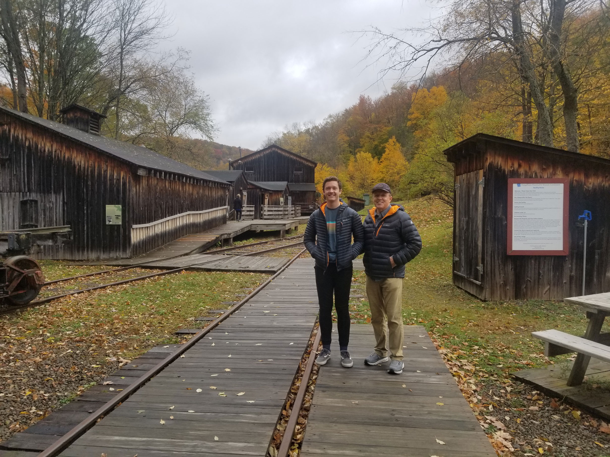

Pennsylvania. Home to the Liberty Bell,
and one of the biggest steel and coal
producers in the country. You could
visit the Chocolate Capital, see the
first piano built in America, or even
go to a Pittsburgh Steelers game.

We found this old Lumberjack village
with old buildings. There was really
cool history inside of all these
handmade buildings.

In our travels, we found a building
a steam powered train. Seeing that I
work on a train, we had to stop and blow the horn and get some pictures.